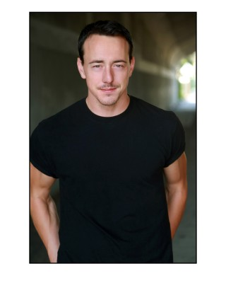
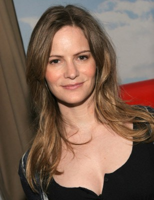
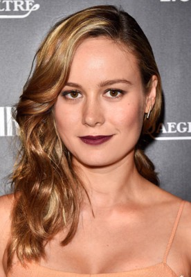

#1855 Greenberg

 IMDB-Wertung: 6.1 / 10
IMDB-Wertung: 6.1 / 10  Metascore: 76
Metascore: 76 
Da sein Bruder mit Familie nach Vietnam gereist ist, passt Roger Greenberg auf deren schickes Haus auf. Er hat ohnehin gerade nichts anderes zu tun, kommt frisch aus der Nervenheilanstalt. Vor allem kann der gelernte Tischler die Zeit nutzen, um sich mal wieder mit alten Freunden zu treffen - so zum Beispiel mit seiner Jugendliebe Beth, die inzwischen geheiratet hat und Mutter zweier Kinder ist, oder mit Ivan, seinem früheren Bandkollegen, der nun irgendwas mit Computern macht. Vor allem trifft Roger aber die junge Florence, die persönliche Assistentin seines Bruders. Die zwei notorisch unglücklichen Menschen fühlen eine starke Verbindung zueinander...
Jahr: 2010
Dauer: 107 Minuten
FSK: 16
Land: USA Studio: Focus FeaturesTonspuren: DTS - ,
Untertitel:
Auflösung: 1080p (1920x816) Größe: 5283 MB
Genre: Komödie, Drama, Liebe
Regisseur: Noah Baumbach
Drehbuch: Jennifer Jason Leigh, Noah Baumbach, Noah Baumbach
Soundtrack: James Murphy
Darsteller:
- Greta Gerwig als Florence Marr
- Koby Rouviere als Greenberg Boy
- Sydney Rouviere als Greenberg Girl
 Chris Messina als Phillip Greenberg
Chris Messina als Phillip Greenberg Susan Traylor als Carol Greenberg
Susan Traylor als Carol Greenberg Merritt Wever als Gina
Merritt Wever als Gina-  Chris Coy als Guy at Gallery
 Ben Stiller als Roger Greenberg
Ben Stiller als Roger Greenberg- Mina Badie als Peggy
 Rhys Ifans als Ivan Schrank
Rhys Ifans als Ivan Schrank Mark Duplass als Eric Beller - Beller's Party
Mark Duplass als Eric Beller - Beller's Party- Jake Paltrow als Johno - Beller's Party
-  Jennifer Jason Leigh als Beth - Beller's Party
- Luke Clements als Guitarist
-  Brie Larson als Sara
 Juno Temple als Muriel
Juno Temple als Muriel- Layla Delridge als Girl with Beer - Sara's Party
- Dave Franco als Rich - Sara's Party
- Max Hoffman als Jerry - Sara's Party
- Nick Nordella als Kid at Stereo - Sara's Party
- Trent Gill als Kid at Stereo - Sara's Party
- Zosia Mamet als Guest - Sara's Party
- Sam als Mahler - a Dog
- Meghan Keeler als Drunk Party Guest , uncredited
- Danny Minnick als Musso and Frank's Patron , uncredited
- Desira Pesta als Coked Party Girl , uncredited
- Karen Strong als Party Girl , uncredited
- Samuel Thacker als Hasidic Boy , uncredited
- Angelo Vacco als The Bartender , uncredited
- Sandra Valladares als Musso and Frank Patron , uncredited
- Carla Vila als Party Girl , uncredited
- Emily Lacy als Gallery Band Member
- Aaron Wrinkle als Gallery Band Member
- Heather Lockie als Gallery Band Member
- Zach Chassler als Marlon
- Blair Tefkin als Megan - Beller's Party
- Charlotte Vida Silverman als Beller's Daughter - Beller's Party
- Nicole Luizzi als Vet Receptionist
- Norizzela Monterroso als Female Vet
- Alfredo Marin als Bus Boy
- Jeremy Barber als Musso and Frank's Patron
- Anna Culp als Musso and Frank's Patron
- Erica Huggins als Musso and Frank's Patron
- Dale JE Hebert II als Musso and Frank's Patron
- Sophie Savides als Musso and Frank's Patron
- Robert E. Wolfe als Male Vet
- Trace Webb als Victor
- Jessica Mills als Second Vet Receptionist
- Maria Snow als Nurse
- Ramona Gonzalez als Anita - Sara's Party
Datei: X:\2010(G-M)\Greenberg (2010, FSK16, 1920x816).mkv seit 27.08.2015
Festplatte: HD 2010(G-Z)-2011(A-F)
 Es gibt insgesamt 85 Filme in der Gruppe '2010(G-M)'
Es gibt insgesamt 85 Filme in der Gruppe '2010(G-M)'